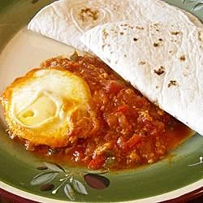

Easy Shakshuka

Ingredients
- 1 tablespoon olive oil
- 2 cloves garlic, minced
- 1 onion, cut into 2 inch pieces
- 1 green bell pepper, cut into 2 inch pieces
- 1 (28 ounce) can whole peeled plum tomatoes with juice
- 1 teaspoon paprika, or to taste
- 2 slices pickled jalapeno pepper, finely chopped
- 4 eggs
- 4 (6 inch) pita bread (Optional)
Steps
Step 1
Heat the vegetable oil in a deep skillet over medium heat. Stir in the garlic, onion, and bell pepper; cook and stir until the onion has softened and turned translucent, about 5 minutes. Add the canned tomatoes, paprika and jalapenos; stir, using the back of a spoon to break up the tomatoes. Simmer for about 25 minutes.
Step 2
Crack an egg into a small bowl, then gently slip the egg into the tomato sauce. Repeat with the remaining eggs. Cook the eggs until the whites are firm and the yolks have thickened but are not hard, 2 1/2 to 3 minutes. If the tomato sauce gets dry, add a few tablespoons of water. Remove the eggs with a slotted spoon, place onto a warm plate, and serve with the tomato sauce and pita bread.